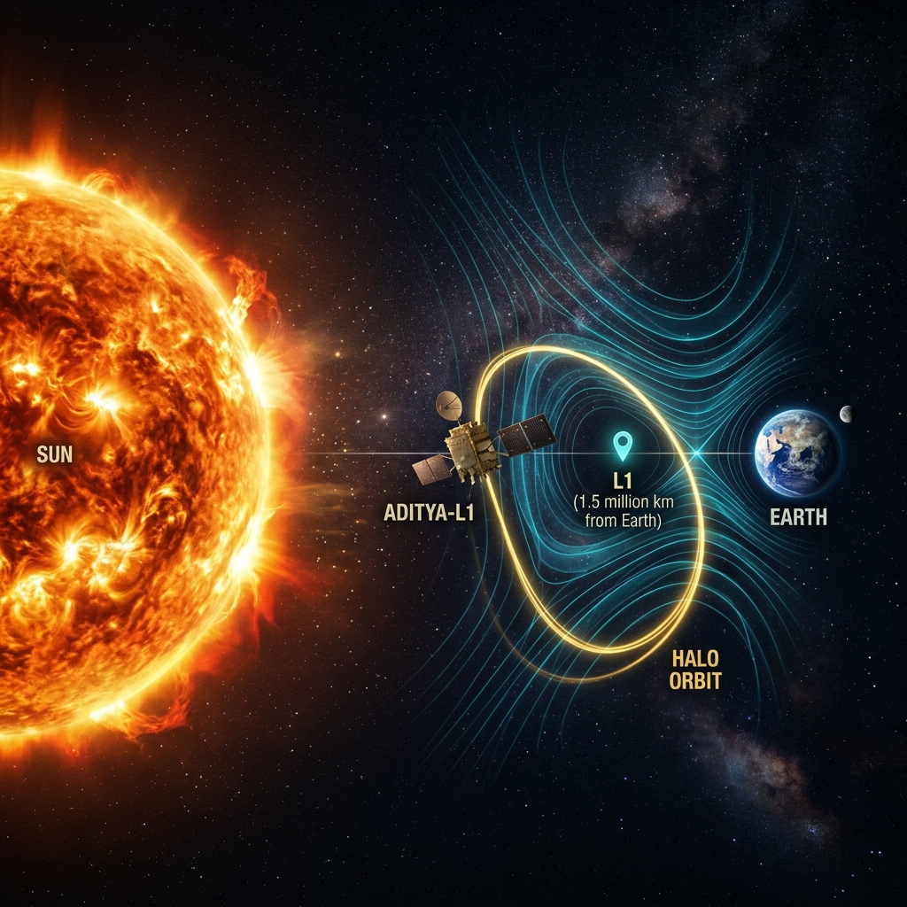

MISSION LOG
A technical compendium of the Aditya-L1 instruments, scientific methodology, and the physics of the Lagrange point.
The ASPEX Payload
The Aditya Solar wind Particle EXperiment (ASPEX) suite is the heart of our plasma analysis. Specialized sensors track the energy distribution of ions from low-energy solar wind populations to supra-thermal flares.
Plasma Moments
Deriving physical constants from raw counts requires high-precision numerical integration over the Velocity Distribution Function (VDF). Our pipeline computes zeroth (Density), first (Velocity), and second (Temperature) moments with a 6-hour sync cadence.
Lagrange Precision
Located 1.5 million kilometres from Earth, the L1 point provides the ultimate vantage point. A stable orbit allows for 24/7 solar monitoring, giving us a "30-minute warning" system for oncoming coronal mass ejections.
